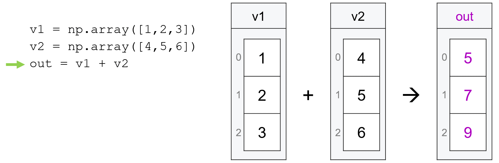
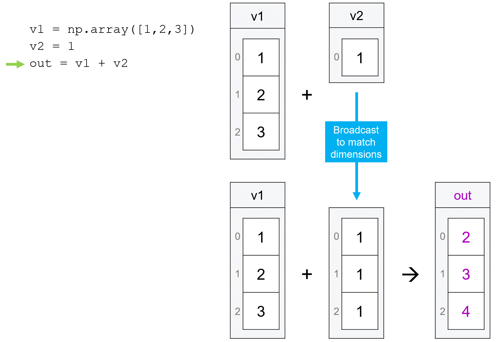
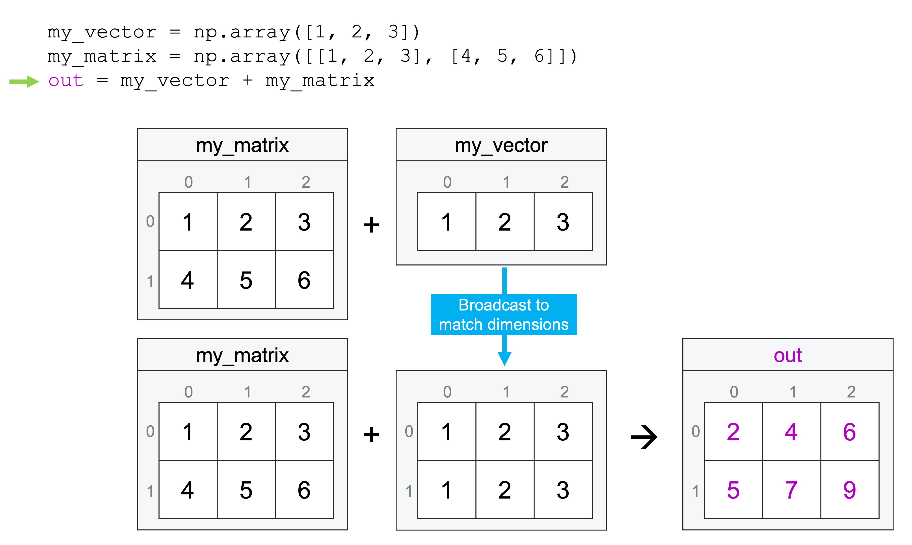
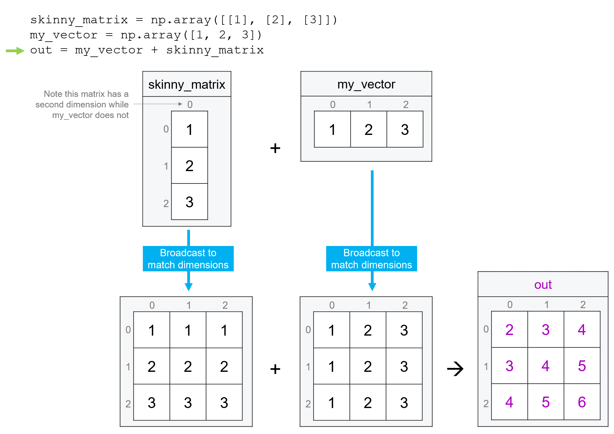

Broadcasting#
The fact that vectors and matrices are just special cases of arrays, and that arrays can have any number of dimensions and any shape, raises an obvious question: how do arrays of different shapes and numbers of dimensions interact?
The answer is that in situations where there is a principled way for arrays of different shapes to interact with one another, numpy will allow operations like adding or multiplying the arrays via a process called broadcasting.
Broadcasting is actually something that you’ve already been exposed to implicitly. When working with vectors, for example, we talked about how, if we try to do math with two vectors of the same length, numpy will apply our mathematical operation element-wise, matching the first entry in the first vector to the first entry in the second vector, the second entry in the first vector to the second entry in the second vector, etc:
import numpy as np
v1 = np.array([1, 2, 3])
v2 = np.array([4, 5, 6])
v1 + v2
array([5, 7, 9])

Or, if one of the two vectors is of length one (or we are working with a regular scaler number that isn’t a vector), numpy will broadcast the operation by applying the operation between the single number and each entry and the longer vector:
v1 + 1
array([2, 3, 4])
v1 + np.array([1])
array([2, 3, 4])

And if we try to do math with two vectors when the lengths aren’t the same and one of the vectors is not of length one the case, we get a ValueError: operand could not be broadcast together error. For example, numpy could not do np.array([1, 2, 3]) + np.array([1, 2]).
And indeed, this is basically the first rule of broadcasting: it only works when the length of the arrays along the dimension over which you are broadcasting have the same length, or where one is of length 1.
Broadcasting Rules#
So what happens if we’re dealing with arrays with more than one dimension? And what do we do if our arrays have different numbers of dimensions – e.g. can I make a vector interact with a matrix, or a matrix interact with a three-dimensional array?
The answer is that numpy addresses these situations by looking at the shapes of the two arrays (e.g. my_array.shape) – starting with the rightmost dimension – to see if matched the dimensions have compatible lengths (e.g. are the same or one is length 1). If so, broadcasting will occur accordingly, and if not you’ll get a ValueError: operands could not be broadcast together error.
OK, that was a lot of terms, so let’s be concrete: suppose have a vector of length 3 and a matrix that is 2 x 3:
my_vector = np.array([1, 2, 3])
my_matrix = np.array([[1, 2, 3], [4, 5, 6]])
my_matrix
array([[1, 2, 3],
[4, 5, 6]])
Now suppose we wanted to add these together. Could we do that? To answer that question, numpy would start by comparing the shapes of the two arrays: (3,) and (2, 3). Starting at the rightmost entry, it would then try and match these up, so it would match 3 to 3. Then it would ask: are these the same, or is one equal to 1? Here the answer is yes, so numpy would broadcast the operation by applying it repeatedly along each row (the extra dimension in the matrix):
my_vector + my_matrix
array([[2, 4, 6],
[5, 7, 9]])

But what if my matrix had been 3x2 instead of 2x3? Well, then numpy would have matched 3 (the vector length) to the rightmost entry in my_matrix2.shape (2), found they were different and that neither was 1, so it would just raise an error:
my_matrix2 = np.array([[1, 2], [3, 4], [5, 6]])
my_vector + my_matrix2
---------------------------------------------------------------------------
ValueError Traceback (most recent call last)
/var/folders/tj/s8f2_ks15h315z5thvtnhz8r0000gp/T/ipykernel_16753/2980522362.py in <module>
1 my_matrix2 = np.array([[1, 2],[ 3, 4], [5, 6]])
----> 2 my_vector + my_matrix2
ValueError: operands could not be broadcast together with shapes (3,) (3,2)
A Common Gotcha: Narrow Matrices v. 1-Dimensional Vectors#
And now a common issue people run into related to broadcasting: in numpy, there is a distinction between a 1-dimensional vector (the data structure we used throughout Week 2), and a 2-dimensional matrix with only 1 row or 1 column.
To illustrate, let’s start by creating a simple vector and getting its .shape:
my_vector = np.array([1, 2, 3])
my_vector
array([1, 2, 3])
my_vector.shape
(3,)
As we can see, numpy only reports the size of our vector in one dimension (the trailing comma is included so you know that it’s a list with one entry, not a weirdly formatted 3). One value is given because our data is one-dimensional.
But if we create a matrix with three rows and one column (note I’m passing a list within a list to np.array), we get a data structure that looks similar, but is actually different in an important way, as evident from the output of .shape:
skinny_matrix = np.array([[1], [2], [3]])
skinny_matrix
array([[1],
[2],
[3]])
skinny_matrix.shape
(3, 1)
As we can see, this matrix is two-dimensional, as evidenced by the fact the .shape is reporting two numbers.
This distinction is important because these differences in the shape of our arrays impact how numpy broadcasts operations. For example, let’s suppose that we wanted to add the contents of skinny_matrix to the contents of my_vector. Intuitively, these both have three entries, so we would think that they would add up element-wise, just the same way they would if we added up my_vector with itself:
my_vector + my_vector
array([2, 4, 6])
But that’s not what happens:
skinny_matrix + my_vector
array([[2, 3, 4],
[3, 4, 5],
[4, 5, 6]])
Why? Because the shape of skinny_matrix is (3, 1), when numpy looks at the length of the rightmost dimension, it finds the value 1, so instead of matching up the elements one to one, it applies the addition operation between my_vector and each row, generating a three by three matrix.

To avoid this type of behavior, we just need to reshape skinny_matrix so that it is actually one-dimensional. We can do this with .reshape(), or with the method .squeeze() (which drops dimensions that are of length one).
now_a_vector = skinny_matrix.reshape(3)
now_a_vector
array([1, 2, 3])
now_a_vector.shape
(3,)
now_a_vector + my_vector
array([2, 4, 6])
Or using .squeeze():
skinny_matrix.shape
(3, 1)
squeezed = skinny_matrix.squeeze()
squeezed.shape
(3,)
Or we could use .reshape to make our original one-dimensional vector a matrix with the same shape as our skinny_matrix:
now_a_matrix = my_vector.reshape((3, 1))
now_a_matrix
array([[1],
[2],
[3]])
now_a_matrix.shape
(3, 1)
skinny_matrix + now_a_matrix
array([[2],
[4],
[6]])